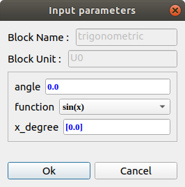

Generator.Functions
Requirements :
Numpy - pip3 install numpyexponential :
Generates a MRI exponential function (T1, T2 or TI) with or without shift.
 |
amplitude : amplitude (a) of function - float decay : decay (b) of function (in ms) - float shift : shift (c) of function - float function : list of possible function : 'a*exp(-bx)', 'a*exp(-bx)+c', 'a*(1-exp(-bx))', 'a*(1-exp(-bx))+c', 'a*(1-2*exp(-bx))', 'a*(1-2*c*exp(-bx))') x : abscissa x - list of float function : out of function selected - list of float |
 |
trigonometric :
Generate a trigonometric function (cos, sin, tan, arccos, arcsin, arctan).
 |
angle : shift angle - float function : list of possible function : 'sin(x)', 'cos(x)', 'tan(x)', 'arcsin(x)', 'arccos(x)', 'arctan(x)' x_degree : abscissa x in degree - list of float function : out of function selected - list of float |
 |